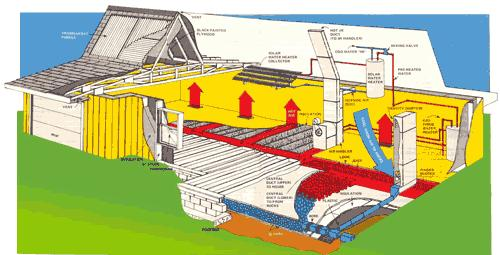

This cutaway view of the Helio Thermics solar home illustrates the ""storage to house"" mode of heat transfer, in which the ""air handler"" draws warm air (red) from rock storage to?and through?the edge-laid cinder blocks... the lower level of the central duct... the blower within the air handler itself... the upper level of the central duct...and finally, ducts (directly beneath the floor) leading to the inside of the house. Cool air (blue) enters the return duct (at right) and travels to the far side of the rock storage area, where it absorbs stored Btu's prior to re-entering the cycle. Heavy insulation?and a virtually airtight house?are what make it possible.